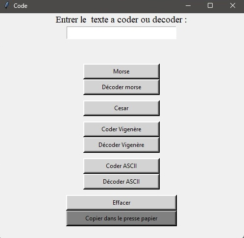
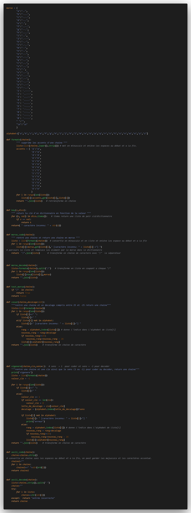
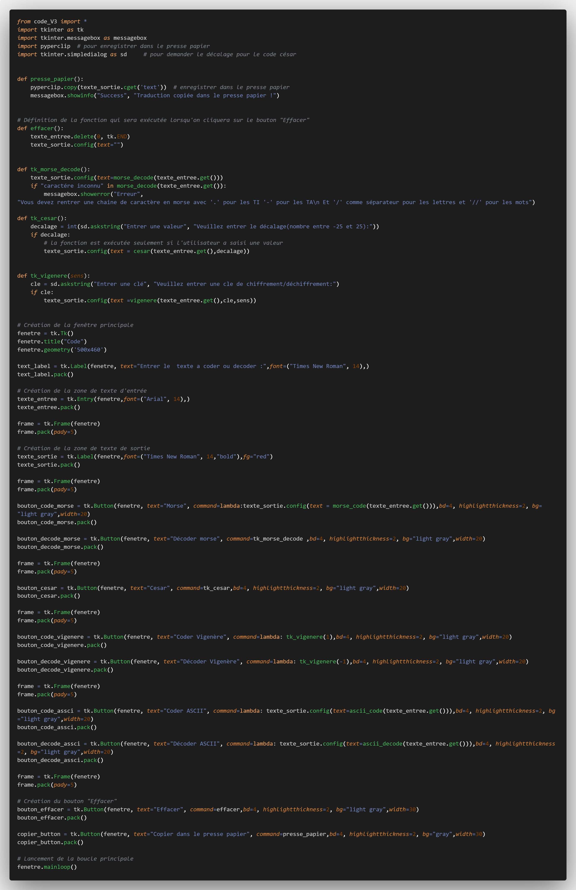

Voici mon premier projet fait en NSI.
L'utilisateur doit rentrer une lettre et le programme affiche le mot en cours ainsi que le pendu et les lettres déjà citées. Le mot est pris aléatoirement dans une liste du dictionnaire.
Le programme supporte toutes les erreurs de l'utilisateur. Si celui ci met un caractère qui n'est pas dans l'alphabet ou qui à déjà été dit, le programme indique l'erreure et redemande une lettre.
Voici le code :

Voici le rendu en Console :

Attention il faut modifier le lien vers le fichier contenant la liste de mot et installer Unidecode
Télécharger version python
L'utilisateur donne le texte à chiffrer au programme, qui le crypte alors en code morse
 Télécharger
Télécharger
L'utilisateur donne le texte à chiffrer au programme, qui le code selon l'option choisi
Voici le code :
Voici le code développée pour les conversion de chaine de caractère, avec différente fonction pour chiffrer/déchiffre les chaines de caractère.

Voici le code qui importe le premier fichier et crée l'application graphique.

Le tout est regroupé dans un fichier zip, il faut installer la bibliothèque Pyperclip pour le presse papier.
Je conseil de lancer le fichier ' interface graphique '.


.jpg)
.jpg)
.jpg)


Ouvrir le fichier python puis exécuter une fonction
Télécharger
Ouvrir le fichier python puis exécuter le
Télécharger